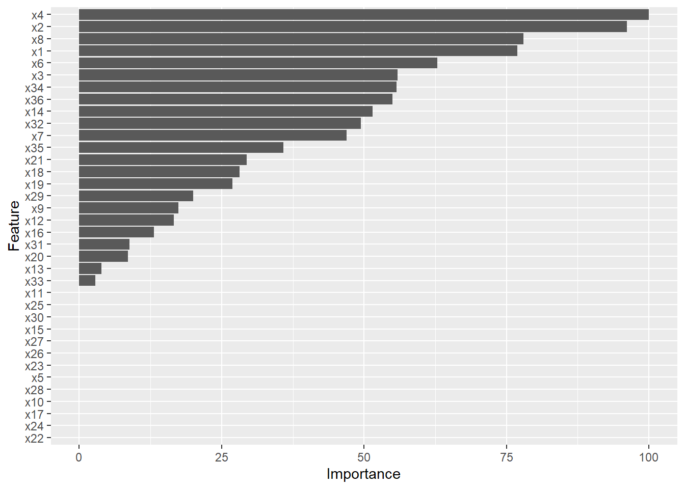

Chapter 53 Supervised Statistical Learning Using Lasso Regression
In this chapter, we will learn how to apply k-fold cross-validation to train a lasso (LASSO) regression model.
53.1 Conceptual Overview
Least absolute shrinkage and selection operator (lasso, Lasso, LASSO) regression is a regularization method and a form of supervised statistical learning (i.e., machine learning) that is often applied when there are many potential predictor variables. Typically, when applying lasso regression the analyst’s primary goal is to improve model prediction, and other scientific research goals goals, such as understanding, explaining, or determining the cause of the outcome/phenomenon of interest, are of little or no interest. In other words, lasso regression can be a great exploratory tool for building a model that accurately predicts a particular outcome, especially when the model includes a large number of predictor variables. Of note, given its emphasis on prediction, there is often little if any attention paid to whether a non-zero lasso regression coefficient is statistically significant; with that said, there has been some preliminary work toward developing significance tests for lasso regression coefficients (Lockhart, Taylor, and Tibshirani 2014).
53.1.1 Shrinkage
Lasso regression selects only the most important predictor variables for predicting an outcome by shrinking the regression coefficients associated with the least important predictor variables to zero. In doing so, lasso regression can reduce the amount of shrinkage that occurs when a trained (i.e., estimated) model is applied to new data, where shrinkage refers to a reduction in model performance (e.g., variance explained in the outcome) when applied to a new data sample. In general, lasso regression is most often applied for the following reasons: (a) to avoid overfitting a model to the data on which it was trained (i.e., estimated), which can be problematic with conventional regression techniques (e.g., ordinary least squares linear regression models, generalized linear models), especially when there is a large number of predictor variables, and (b) to select only the most important predictor variables (i.e., features) from a much larger number of predictor variables.
53.1.2 Regularization
Lasso regression is a specific regularization method refereed to as a L1 regularization method, and it is related to other regularization methods like ridge regression and elastic net. The purpose of regularization is to reduce the variance of parameter estimates (i.e., regression coefficients), even if such a reduction comes with the cost of introducing or allowing for additional bias; ultimately, this means finding the optimal level of model complexity.
53.1.3 Tuning
Lasso regression involves two tuning parameters called alpha and lambda. For lasso regression, the alpha tuning parameter responsible for what is called the mixing percentage and is set to one. When alpha is set to one (\(\alpha\) = 1), we are estimating a lasso regression model, and when alpha is set to zero (\(\alpha\) = 0), we are estimating a ridge regression model. Thus, given that alpha remains constant for lasso regression, all we need to remember is to set alpha to one when specifying the model.
The more important turning parameter for lasso regression is lambda (\(\lambda\)), which is our regularization parameter. Different values of lambda are evaluated to arrive at a final model that strikes a balance between model parsimony and accuracy. To achieve this end, the lambda tuning parameter places a constraint on the maximum absolute value of the regression coefficients in the model and adds a penalty to non-zero regression coefficients. So what are the effects of different lambda values? First, when lambda is zero, the model regression coefficients (i.e., parameter estimates) will approximate a conventional (e.g., ordinary least squares regression) model, and no regression coefficients will shrink to zero (i.e., be eliminated). Second, when lambda is large, regression coefficients with smaller absolute values will shrink toward zero. Third, when lambda becomes too large, all regression coefficients shrink to zero, resulting in a very parsimonious but (likely) inaccurate model.
Moreover, the value of the lambda tuning parameter influences variance and bias. Specifically, as lambda gets smaller, variance grows larger, where variance refers to the uncertainty (or dispersion) of the regression coefficient estimates. Conversely, as lambda gets larger, bias grows larger, where bias refers to the differences between the regression coefficient estimates and the true population parameters. In lasso regression, variance is minimized at the expense of greater bias. In this way, lasso regression differs from more traditional forms of regression. For example, in ordinary least squares (OLS) regression, bias is minimized at the expense of greater variance.
When training a lasso regression model, an array of possible lambda values are used to tune the model. To arrive at an optimal lambda value, model accuracy (e.g., amount of error) is noted at each level of lambda, with examples of model accuracy indices including (pseudo) R2, mean-squared error (MSE), root mean-squared error (RMSE), classification accuracy, and Cohen’s kappa (\(\kappa\)) (see Figure 1 for an example); the model accuracy index used will depend, in part, on the type of LASSO regression model specified (e.g., linear, logistic). Given that larger lambda result in a larger penalty to non-zero regression coefficients, model parsimony is also affected as model lambda is adjusted; specifically, models become more parsimonious (i.e., fewer predictor variables with non-zero regression coefficients) as lambda increases in magnitude, but at some point, model predictive accuracy starts to suffer when a model becomes too parsimonious and most (or all) of regression coefficients fall to zero (see Figure 2 for an example). Consequently, the optimal lambda value will strike a balance between model accuracy and model parsimony. [Note: To facilitate interpretation, we often apply a logarithmic (log) transformation to lambda.]
This plot is an example of a logarithmic tranformation of lambda in relation to mean-squared error (MSE).
This plot is an example of a logarithmic tranformation of lambda in relation to regression coefficient magnitude, where x1-x10 refer to 10 predictor variables
53.1.4 Model Type Selection
An important part of the lasso regression model building process is selecting the appropriate model type. Often, the characteristics of the outcome variable will inform which type of model should be used within lasso regression. For example, if the outcome variable is continuous in terms of its measurement scale (i.e., interval or ratio scale), then a linear model is likely appropriate. As another example, if the outcome variable is dichotomous (i.e., binary), then a generalized linear model like a logistic regression model (i.e., logit model) is likely appropriate. Traditionally, lasso regression has been applied to linear regression models; however, it can, however, also be applied to other families of models, such as generalized linear models. The model type selected will also influence what statistical assumptions should be met; with that said, lasso regression can help address multicollinearity that can pose problems for traditional forms of regression (e.g., OLS linear, logistic).
53.1.5 Cross-Validation
It is advisable to use cross-validation when training a model, as cross-validation can improve model prediction performance and how well the model generalizes to other data from the same population. There are different approaches to carrying out cross-validation, with one of the simplest being simple empirical cross-validation, which you can learn more about in the chapter on statistical and empirical cross-validation. Another approach is called k-fold cross-validation, which is quite popular among practitioners and is introduced in the chapter on k-fold cross-validation applied to logistic regression. In this chapter, we will apply lasso regression using a k-fold cross-validation framework, as this approach is useful when tuning the lambda parameter.
Regardless of the type of cross-validation used, it is advisable to apply cross-validation in a predictive analytics framework, which is described next.
53.1.6 Predictive Analytics
As a reminder, true predictive analytics (predictive modeling) involves training (estimating, building) a model in one or more samples (e.g., training data) and then evaluating (testing) how well the model performs in a separate sample (i.e., test data) from the same population. The term predictive analytics is a big umbrella term, and predictive analytics can be applied to many different types of models, including lasso regression. When building a model using a predictive analytics framework, one of our goals is to minimize prediction errors (i.e., improve prediction accuracy) when the model is applied to “fresh” or “new” data (e.g., test data). Fewer prediction errors when applying the model to new data indicate that the model is more accurate. At the same time, we want to avoid overfitting our model such that it predicts with a high level of accuracy in our training data but doesn’t generalize well to our test data; applying a trained model to new data can help us evaluate with the extent to which we might have overfit a model to the original data. Fortunately, as described above, a major selling point of lasso regression is that it can help reduce model overfitting.
53.2 Tutorial
This chapter’s tutorial demonstrates training a lasso regression model using k-fold cross-validation.
53.2.1 Video Tutorials
As usual, you have the choice to follow along with the written tutorial in this chapter or to watch the video tutorial below.
Link to video tutorial: https://youtu.be/5GZ5BHOugBQ
Additionally, in the following video tutorial, I show how to compare the results of an OLS multiple linear regression model to a lasso regression model, where both are trained using k-fold cross-validation.
Link to video tutorial: https://youtu.be/NUfbl7ijZ0Q
53.2.2 Functions & Packages Introduced
| Function | Package |
|---|---|
set.seed |
base R |
nrow |
base R |
as.data.frame |
base R |
createDataPartition |
caret |
trainControl |
caret |
seq |
base R |
train |
caret |
log |
base R |
plot |
base R |
summary |
base R |
varImp |
caret |
ggplot |
ggplot2 |
predict |
base R |
print |
base R |
RMSE |
caret |
R2 |
caret |
coef |
base R |
function |
base R |
data.frame |
base R |
matrix |
base R |
colnames |
base R |
rownames |
base R |
round |
base R |
c |
base R |
list |
base R |
as.table |
base R |
resamples |
caret |
compare_models |
caret |
53.2.3 Initial Steps
If you haven’t already, save the file called “lasso.csv” into a folder that you will subsequently set as your working directory. Your working directory will likely be different than the one shown below (i.e., "H:/RWorkshop"). As a reminder, you can access all of the data files referenced in this book by downloading them as a compressed (zipped) folder from the my GitHub site: https://github.com/davidcaughlin/R-Tutorial-Data-Files; once you’ve followed the link to GitHub, just click “Code” (or “Download”) followed by “Download ZIP”, which will download all of the data files referenced in this book. For the sake of parsimony, I recommend downloading all of the data files into the same folder on your computer, which will allow you to set that same folder as your working directory for each of the chapters in this book.
Next, using the setwd function, set your working directory to the folder in which you saved the data file for this chapter. Alternatively, you can manually set your working directory folder in your drop-down menus by going to Session > Set Working Directory > Choose Directory…. Be sure to create a new R script file (.R) or update an existing R script file so that you can save your script and annotations. If you need refreshers on how to set your working directory and how to create and save an R script, please refer to Setting a Working Directory and Creating & Saving an R Script.
# Set your working directory
setwd("H:/RWorkshop")Next, read in the .csv data file called “lasso.csv” using your choice of read function. In this example, I use the read_csv function from the readr package (Wickham and Hester 2020). If you choose to use the read_csv function, be sure that you have installed and accessed the readr package using the install.packages and library functions. Note: You don’t need to install a package every time you wish to access it; in general, I would recommend updating a package installation once ever 1-3 months. For refreshers on installing packages and reading data into R, please refer to Packages and Reading Data into R.
# Install readr package if you haven't already
# [Note: You don't need to install a package every
# time you wish to access it]
install.packages("readr")# Access readr package
library(readr)
# Read data and name data frame (tibble) object
df <- read_csv("lasso.csv")##
## -- Column specification ---------------------------------------------------------------------------------
## cols(
## .default = col_double()
## )
## i Use `spec()` for the full column specifications.# Print the names of the variables in the data frame (tibble) object
names(df)## [1] "y" "x1" "x2" "x3" "x4" "x5" "x6" "x7" "x8" "x9" "x10" "x11" "x12" "x13" "x14" "x15"
## [17] "x16" "x17" "x18" "x19" "x20" "x21" "x22" "x23" "x24" "x25" "x26" "x27" "x28" "x29" "x30" "x31"
## [33] "x32" "x33" "x34" "x35" "x36"# Print variable type for each variable in data frame (tibble) object
str(df)## spec_tbl_df[,37] [1,000 x 37] (S3: spec_tbl_df/tbl_df/tbl/data.frame)
## $ y : num [1:1000] -0.886 0.763 0.209 1.746 0.22 ...
## $ x1 : num [1:1000] -0.57 1.763 -0.016 1.476 -1.288 ...
## $ x2 : num [1:1000] -0.669 1.077 0.264 0.153 -1.091 ...
## $ x3 : num [1:1000] -0.978 1.094 -1.302 1.804 0.226 ...
## $ x4 : num [1:1000] -0.948 2.427 -0.493 -1 0.713 ...
## $ x5 : num [1:1000] -1.703 1.011 -0.049 -0.768 1.731 ...
## $ x6 : num [1:1000] -0.623 2.574 -0.61 0.008 -1.21 ...
## $ x7 : num [1:1000] 0.176 1.32 -0.565 -0.083 1.125 ...
## $ x8 : num [1:1000] -1.624 2.917 -1.626 0.478 -1.053 ...
## $ x9 : num [1:1000] -1.189 1.997 -0.95 0.204 0.622 ...
## $ x10: num [1:1000] -0.519 0.882 0.676 1.182 0.234 ...
## $ x11: num [1:1000] -0.495 1.155 0.531 0.687 0.596 ...
## $ x12: num [1:1000] 0.008 2.895 0.434 1.195 -0.004 ...
## $ x13: num [1:1000] 0.269 1.996 0.499 -0.523 -1.714 ...
## $ x14: num [1:1000] 0.017 3.665 1.998 -2.024 0.754 ...
## $ x15: num [1:1000] -0.32 0.885 -0.776 4.072 -0.335 ...
## $ x16: num [1:1000] -0.849 1.132 -0.404 0.658 -0.154 ...
## $ x17: num [1:1000] -4.33 6.26 1.66 1.11 -2.2 ...
## $ x18: num [1:1000] -2.405 6.338 1.684 6.423 0.379 ...
## $ x19: num [1:1000] -0.195 0.236 0.011 0.036 0.082 -0.419 -0.327 0.034 -0.422 -0.164 ...
## $ x20: num [1:1000] 0.634 0.356 0.422 1.693 0.593 ...
## $ x21: num [1:1000] -0.853 1.685 0.557 -0.498 1.248 ...
## $ x22: num [1:1000] -1.537 1.771 -0.882 -0.316 -0.028 ...
## $ x23: num [1:1000] -0.675 0.715 0.623 -0.885 0.246 ...
## $ x24: num [1:1000] -1.077 0.007 -0.223 0.315 1.728 ...
## $ x25: num [1:1000] -0.851 1.382 -0.1 0.384 -0.212 ...
## $ x26: num [1:1000] -1.578 0.172 1.537 1.268 0.616 ...
## $ x27: num [1:1000] -2 2.62 -2.11 1.64 2.14 ...
## $ x28: num [1:1000] -0.641 3.905 -0.914 0.357 0.266 ...
## $ x29: num [1:1000] -1.223 1.874 0.792 0.509 1.008 ...
## $ x30: num [1:1000] -0.615 1.862 0.64 0.483 1.469 ...
## $ x31: num [1:1000] -0.751 1.291 0.147 -1.321 0.268 ...
## $ x32: num [1:1000] -0.464 3.085 0.558 0.917 0.762 ...
## $ x33: num [1:1000] -1.749 0.424 0.584 1.264 1.445 ...
## $ x34: num [1:1000] -0.841 -0.189 0.58 2.599 2.538 ...
## $ x35: num [1:1000] -0.933 0.448 -1.856 -0.091 2.658 ...
## $ x36: num [1:1000] -1.296 1.706 0.707 0.454 1.118 ...
## - attr(*, "spec")=
## .. cols(
## .. y = col_double(),
## .. x1 = col_double(),
## .. x2 = col_double(),
## .. x3 = col_double(),
## .. x4 = col_double(),
## .. x5 = col_double(),
## .. x6 = col_double(),
## .. x7 = col_double(),
## .. x8 = col_double(),
## .. x9 = col_double(),
## .. x10 = col_double(),
## .. x11 = col_double(),
## .. x12 = col_double(),
## .. x13 = col_double(),
## .. x14 = col_double(),
## .. x15 = col_double(),
## .. x16 = col_double(),
## .. x17 = col_double(),
## .. x18 = col_double(),
## .. x19 = col_double(),
## .. x20 = col_double(),
## .. x21 = col_double(),
## .. x22 = col_double(),
## .. x23 = col_double(),
## .. x24 = col_double(),
## .. x25 = col_double(),
## .. x26 = col_double(),
## .. x27 = col_double(),
## .. x28 = col_double(),
## .. x29 = col_double(),
## .. x30 = col_double(),
## .. x31 = col_double(),
## .. x32 = col_double(),
## .. x33 = col_double(),
## .. x34 = col_double(),
## .. x35 = col_double(),
## .. x36 = col_double()
## .. )# Print first 6 rows of data frame (tibble) object
head(df)## # A tibble: 6 x 37
## y x1 x2 x3 x4 x5 x6 x7 x8 x9 x10 x11 x12 x13
## <dbl> <dbl> <dbl> <dbl> <dbl> <dbl> <dbl> <dbl> <dbl> <dbl> <dbl> <dbl> <dbl> <dbl>
## 1 -0.886 -0.57 -0.669 -0.978 -0.948 -1.70 -0.623 0.176 -1.62 -1.19 -0.519 -0.495 0.008 0.269
## 2 0.763 1.76 1.08 1.09 2.43 1.01 2.57 1.32 2.92 2.00 0.882 1.16 2.90 2.00
## 3 0.209 -0.016 0.264 -1.30 -0.493 -0.049 -0.61 -0.565 -1.63 -0.95 0.676 0.531 0.434 0.499
## 4 1.75 1.48 0.153 1.80 -1 -0.768 0.008 -0.083 0.478 0.204 1.18 0.687 1.20 -0.523
## 5 0.22 -1.29 -1.09 0.226 0.713 1.73 -1.21 1.12 -1.05 0.622 0.234 0.596 -0.004 -1.71
## 6 -0.458 -0.619 -1.82 -1.35 -0.036 -3.79 -2.02 -0.072 -1.26 -0.999 -1.12 -2.61 -1.85 -2.16
## # ... with 23 more variables: x14 <dbl>, x15 <dbl>, x16 <dbl>, x17 <dbl>, x18 <dbl>, x19 <dbl>,
## # x20 <dbl>, x21 <dbl>, x22 <dbl>, x23 <dbl>, x24 <dbl>, x25 <dbl>, x26 <dbl>, x27 <dbl>, x28 <dbl>,
## # x29 <dbl>, x30 <dbl>, x31 <dbl>, x32 <dbl>, x33 <dbl>, x34 <dbl>, x35 <dbl>, x36 <dbl># Print number of rows in data frame (tibble) object
nrow(df)## [1] 1000The data frame (df) has 1000 cases and the following 37 variables: y and x1 through x36. We’ll use y as our outcome variable and x1 - x36 as our predictor variables. Per the output of the str (structure) function above, all of the variables are of type numeric. Sticking with the theme of performance management for this part of the book, we’ll imagine that the y variable is some kind of measure of job performance.
53.2.4 Process Overview
In this tutorial, we will implement lasso regression using k-fold cross-validation. If you wish to learn more about k-fold cross-validation, please refer to the chapter on statistical and empirical cross-validation. As a reminder, you can perform k-fold cross-validation with different types of statistical models. We will also engage in true predictive analytics (i.e., predictive modeling), such that we will partition the data into training and test data, train the model on the training data using k-fold cross-validation, and evaluate the final model’s predictive accuracy based on the test data.
53.2.5 Partition the Data
Let’s begin by randomly partitioning (i.e., splitting) our data into training and test data frames. To get this process started, we will install and access the caret package (if you haven’t already). The caret package has a number of different functions that are useful for implementing predictive analytics and a variety of machine learning models.
# Install caret package if you haven't already
install.packages("caret")# Access caret package
library(caret)Using the createDataPartition function from the caret package, we will partition the data such that 80% of the cases will be randomly assigned to one split, and the remaining 20% of cases will be assigned to the other split. However, immediately before doing so, I recommend using the set.seed function from base R and include a number of your choosing as the sole parenthetical argument; this will create “random” operations that are reproducible. With your seed set, create a name for the index of unique cases that will identify which cases should be included in the first split involving 80% of the original data frame cases; here, I call this matrix object index and assign values to it using the <- operator. To the right of the <-, enter the name of the createDataPartition function. As the first argument, type the name of the data frame (df), followed by the $ and the name of the outcome variable (y). [Note: I have noticed that the createDataPartition sometimes adds an extra case to the partitioned data index object, which seems to occur more frequently when the outcome variable is of type factor as opposed to numeric, integer, or character. An extra case added to the training data frame is not a big deal when we have this many cases, so if it happens, we won’t worry about it. If you would like to avoid this, you can try converting the outcome variable from type factor to type numeric, integer, or character, whichever makes the most sense given the variable. You can always convert the outcome back to type factor after this process, which I demonstrate in this tutorial. This “fix” works some of the time but not all of the time.] As a the second argument, set p=.8 to note that you wish to randomly select 80% (.8) of the cases from the data frame. As the third argument, type list=FALSE to indicate that we want to the values in matrix form to facilitate reference to them in a subsequent step. As the fourth argument, type times=1 to indicate that we only want to request a single partition of the data frame.
# Set seed for reproducible random partitioning of data
set.seed(1985)
# Partition data and create index matrix of selected values
index <- createDataPartition(df$y, p=.8, list=FALSE, times=1)Now it’s time to use the index matrix object we created above to assign cases to the training data frame (which we will name train_df) and to the testing data frame (which we will name test_df). Beginning with the training data frame, we assign the random sample of 80% of the original data frame (df) to the train_df object by using the <- operator. Specifically, we specify the name of the original data frame (df), followed by brackets ([ ]). In the brackets, include the name of the index object we created above, followed by a comma (,). The placement of the index object before the comma indicates that we are selecting rows with the selected unique row numbers (i.e., index) from the index matrix. Next, we do essentially the same thing with the test_df, except that we insert a minus (-) symbol before index to indicate that we don’t want cases associated with the unique row numbers contained in the index matrix.
# Create test and train data frames
train_df <- df[index,]
test_df <- df[-index,]If you received the error message shown below, then please proceed to convert the original data frame df from a tibble to a conventional data frame; after that, repeat the steps above from which you received the error message originally, which I will do below. If you did not receive this message, then you can skip this step and proceed on to the step in which you verify the number of rows in each data frame.
\(\color{red}{\text{Error: `i` must have one dimension, not 2.}}\)
# Convert data frame object (df) to a conventional data frame object
df <- as.data.frame(df)
# Create test and train data frames
train_df <- df[index,]
test_df <- df[-index,]To check our work and to be sure that 80% of the cases ended up in the train_df data frame and the remaining 20% ended up in the test_df data frame, let’s apply the nrow function from base R.
# Verify number of rows (cases) in each data frame
nrow(train_df)## [1] 801nrow(test_df)## [1] 199Indeed, 801 (~ 80%) of the original 1,000 cases ended up in the train_df data frame, and 199 (~ 20%) of the original 1,000 cases ended up in the test_df data frame, which is close enough to a perfect 80/20 partition.
53.2.6 Specify k-Fold Cross-Validation
Now it’s time to specify the type of training method we want to apply, which in this tutorial is k-fold cross-validation. Let’s create and name our specifications object ctrlspecs using the <- operator. To the right of the <- operator, type the name of the trainControl function from the caret package. As the first argument, specify the method by setting method="cv", where "cv" represents cross-validation. As the second argument, set number=10 to indicate that we want 10 folds (i.e., 10 resamples), which means we will specifically use 10-fold cross-validation. As the third argument, type savePredictions="all" to save all of the hold-out predictions for each of our resamples from the train_df data frame, where hold-out predictions refer to those cases that weren’t used in training each iteration of the model based on each fold of data but were used for validating the model trained at each fold.
# Specify 10-fold cross-validation as training method
ctrlspecs <- trainControl(method="cv",
number=10,
savePredictions="all")53.2.7 Specify and Train Lasso Regression Model
Before we specify our lasso regression model, we need to create a vector of potential lambda tuning parameter values. We’ll begin by creating an object to which we can assign the potential values; let’s make things clear and simple by naming this object lambda_vector using the <- operator. Next, we will create a vector of possible lambda by setting the base to 10 and then exponentiating it by a sequence of 500 values ranging from 5 to -5. Remember, that the ^ operator is how we assign exponents. The seq (sequence) function from base R is specified with the first argument being one end of the sequence (e.g., 5) and the second argument being the other end of the sequence (e.g., -5); the upper and lower limits of the sequence probably do not need to be this wide, but to be on the safe side, I recommend using these same limits for other sequences of lambdas. The third argument of the seq function is the length of the sequence in terms of the number of values generated within the sequence; let’s set the length to 500 (length=500); I also recommend using this same length of 500 for other vectors of potential lambdas you might generate. We will reference this lambda_vector object we created when we specify our model training parameters.
# Create vector of potential lambda values
lambda_vector <- 10^seq(5, -5, length=500)To specify (and ultimately train) our lasso regression model, we will use the train function from the caret package.
- I recommend using the
set.seedfunction from base R and include a number of your choosing as the sole parenthetical argument; this will create “random” operations that are reproducible. - Moving on to the
trainfunction, come up with a name for your model object; here, I name the model objectmodel1and use the<-operator to assign the model specifications to it. - Next, type the name of the
trainfunction.
- As the first argument, let’s specify our linear model. To the left of the tilde (
~) symbol, type the name of the continuous outcome variable calledy. To the right of the tilde (~) symbol, type., which will automatically specify all remaining variables in the data frame as predictor variables; if you don’t want to specify all remaining variables as predictor variables, then you can do it the old-fashioned way by entering each variable name separated by a+symbol. - As the second argument in the
trainfunction, typedata=followed by the name of the training data frame object (train_df). - As the third argument, use the
preProcessargument to mean center (i.e., subtract the mean of the variable from each value) and standardize (i.e., divide each value of the variable by the variable’s standard deviation) the predictor variables prior to training the model, which is advisable when using lasso regression; to do so, use thec(combine) function from base R with"center"and"scale"as the two arguments. - As the fourth argument, specify
method="glmnet", which will allow us to access regularization method models such as lasso regression or ridge regression. - As the fifth argument, use
tuneGridto specify the alpha and lambda tuning parameters. Specifically, type the name of theexpand.gridfunction from base R withalphaset to 1 (alpha=1) as the first argument (to specify that we want a lasso regression model) andlambdaset tolambda_vector(which is the vector of potential lambda values we generated) as the second argument. Behind the scenes, this specification of theexpand.gridfunction creates a data frame with all of our potential lambda values as unique rows and alpha set as a constant of 1 for each corresponding row. - As the sixth argument, type
trControl=followed by the name of the object that includes your k-fold cross-validation specifications, which we created above (ctrlspecs). As the final argument, specifyna.action=na.omit, which will listwise delete any cases with missing data on any of the variables specified in the model; we don’t have any missing data in our data, but if we did, we would need to specify this argument. - [When lasso regression models are estimated, the
trainfunction by default selects the optimal model based on root mean-squared error (RMSE), but this can be changed to R2 by including the argumentweights="Rsquared".]
Note: Currently, available caret package models do not support maximum likelihood (ML) estimation, where ML has advantages when data are missing (completely) at random. It is beyond the scope of this tutorial to show how ML might be incorporated, but the caret package handbook has information on how you can specify your own model and presumably an outside estimator like ML.
# Set seed for reproducible random selection and assignment operations
set.seed(1985)
# Specify lasso regression model to be estimated using training data
# and k-fold cross-validation process
model1 <- train(y ~ .,
data=train_df,
preProcess=c("center","scale"),
method="glmnet",
tuneGrid=expand.grid(alpha=1, lambda=lambda_vector),
trControl=ctrlspecs,
na.action=na.omit)Our 10-fold cross-validation and model training process that we implemented above did the following. First, at each fold (i.e., resample), all possible lambda values from our lambda_vector object were evaluated based on the estimated model’s predictive accuracy/performance in the kth holdout validation sample for that fold, with model accuracy/performance signified by root mean-squared error (RMSE), R2 (Rsquared), and mean absolute error (MAE); however, by default, the training algorithm selected the lambda value in which RMSE, specifically, was lowest (i.e., minimized). As noted above, this evaluation criterion can be changed to R2 (Rsquared) by including the argument weights="Rsquared" in the train function. Second, after the first step was repeated for all 10 folds in the 10-fold cross-validation process, the average of the best lambda at each fold was computed to arrive at the optimal lambda. Third, a final lasso regression model was estimated based on the complete train_df data frame, and the optimal lambda value was applied to determine the final best model, including the regression coefficients; the final model accuracy/performance metrics (e.g., RMSE, Rsquared) represent an average of the metrics across the 10 folds based on the optimal lambda value applied to each fold.
Now it’s time to sift through the results. Let’s begin by finding out what the optimal lambda value is based on the model training process we just carried out. To find out, we can specify the name of the model object we trained (model1) followed by the $ operator and bestTune, which will retrieve the best alpha and lambda tuning parameter values. We already know alpha is equal to 1 because we set it as a constant to specify we wanted a lasso regression model, we but will anxiously await what the optimal lambda value is by running the following command.
# Best tuning parameters (alpha, lambda)
model1$bestTune## alpha lambda
## 162 1 0.0168443As you can see in the output above, alpha is indeed 1, and the optimal lambda is .017 (after some rounding). Given that we really only wanted to know the optimal lambda value, we can request that directly by adding $lambda to the previous command.
# Best lambda tuning parameter
model1$bestTune$lambda## [1] 0.0168443Next, let’s look at the regression coefficients for the final model in which the optimal lambda value was applied. To do so, type the name of the coef function from base R, and as the first argument, specify the name of the model object we trained (model1) followed by the $ operator and finalModel, where the latter calls up the final model estimated based on the complete train_df data frame as the final phase of the 10-fold cross-validation process. As the second argument, specify the name of the model object we trained (model1) followed by the $ operator and bestTune$lambda, which when combined with the first argument, limits the retrieved regression coefficients to only those associated with the optimal lambda value.
# Lasso regression model coefficients
coef(model1$finalModel, model1$bestTune$lambda)## 37 x 1 sparse Matrix of class "dgCMatrix"
## 1
## (Intercept) 0.001559301
## x1 0.105710879
## x2 0.132145274
## x3 0.076835793
## x4 0.137463746
## x5 .
## x6 0.086437871
## x7 0.064530835
## x8 0.107235443
## x9 0.023979445
## x10 .
## x11 .
## x12 0.022841341
## x13 -0.005409866
## x14 0.070845008
## x15 .
## x16 0.018059851
## x17 .
## x18 0.038648205
## x19 0.036944920
## x20 -0.011799344
## x21 0.040398213
## x22 .
## x23 .
## x24 .
## x25 .
## x26 .
## x27 .
## x28 .
## x29 0.027449222
## x30 .
## x31 0.012105496
## x32 0.067979921
## x33 -0.003821760
## x34 -0.076544682
## x35 -0.049270620
## x36 0.075633216As you can see, the optimal lambda value shrunk a number of the regression coefficients to zero, where zero is represented by a period (.). In this way, you can see how lasso regression can be used for variable selection (i.e., feature selection), as only the most predictive predictor variables had non-zero regression coefficients.
The next step is not required, but I find it helpful to understand visually how the lambda value influences model prediction error (i.e., accuracy), as indicated by RMSE. For interpretation purposes, however, we perform a logarithmic transformation on the lambda values using the log function from base R. To create this data visualization, we will use the plot function from base R. As the first argument, introduce the log function with model1$results$lambda as the sole parenthetical argument, where the latter calls up our vector of 500 potential lambda values. As the second argument, type model1$results$RMSE to retrieve the vector of RMSE values (averaged across the 10 folds) based on applying each of our potential lambda values at each fold. As the third argument, we’ll type xlab= followed by a meaningful label for the x-axis (in quotation marks). As the fourth argument, we’ll type ylab= followed by a meaningful label for the y-axis (in quotation marks). As the final argument, I added xlim= followed by c(-5, 0) to constrain the x-axis limits to -5 and 0, respectively; you don’t necessarily need to do this, and if you do, you’ll likely need to play around with those limits to find ones that focus in on the more meaningful areas of the plot.
# Plot log(lambda) & root mean-squared error (RMSE)
plot(log(model1$results$lambda),
model1$results$RMSE,
xlab="log(lambda)",
ylab="Root Mean-Squared Error (RMSE)",
xlim=c(-5,0)
)
Remember, our goal is to minimize model prediction error and, specifically, RMSE. As you can see in the plot above, the lowest RMSE value (~ .84) seems to occur around a log(lambda) value of approximately -4 or so. To see what that exact value is, let’s apply a logarithmic transformation to our optimal lambda using the log function.
# Best tuned lambda
log(model1$bestTune$lambda)## [1] -4.083743As you can see, the log of our lambda is -4.084 (with rounding), which aligns with our visual estimate from the plot of about -4.
Interestingly, I haven’t been able to find an existing function or command associated with the caret package and the glmnet model function that makes just the average RMSE and Rsquared values across the k (i.e., 10) folds easily accessible, and specifically for the optimal lambda value. Thus, we’re going to do this the old-fashioned way (or at least more cumbersome way) by creating our own functions to carry out those operations. For space considerations, I’m not going to explain each aspect of the functions, but I encourage you to take a peek at the operations within the braces ({ }) to see if you can follow the logic.
First, let’s create a function called RMSE_lasso.
# Create function to identify RMSE for best lambda,
# where x = RMSE vector, y = lambda vector, & z = optimal lambda value
RMSE_lasso <- function(x, y, z){
temp <- data.frame(x, y)
colnames(temp) <- c("RMSE", "lambda_val")
rownum <- which(temp$lambda_val==z)
print(temp[rownum,]$RMSE)
}Now, let’s apply the RMSE_lasso to our data by plugging the RMSE and lambda vectors from our final model, along with the optimal lambda value.
# Apply newly created Rsquared_lasso function
RMSE_lasso(x=model1$results$RMSE, # x = RMSE vector
y=model1$results$lambda, # y = lambda vector
z=model1$bestTune$lambda) # z = optimal lambda value## [1] 0.8400556Our RMSE value based on the final model with the optimal lambda is .840 (with rounding).
Second, let’s create a function called Rsquared_lasso
# Create function to identify Rsquared for best lambda,
# where x = Rsquared vector, y = lambda vector, & z = optimal lambda value
Rsquared_lasso <- function(x, y, z){
temp <- data.frame(x, y)
colnames(temp) <- c("Rsquared", "lambda_val")
rownum <- which(temp$lambda_val==z)
print(temp[rownum,]$Rsquared)
}Now, let’s apply the Rsquared_lasso to our data by plugging the Rsquared and lambda vectors from our final model, along with the optimal lambda value.
# Apply newly created Rsquared_lasso function
Rsquared_lasso(x=model1$results$Rsquared, # x = Rsquared vector
y=model1$results$lambda, # y = lambda vector
z=model1$bestTune$lambda) # z = optimal lambda value## [1] 0.4150716Our Rsquared value based on the final model with the optimal lambda is .415 (with rounding). We’ll revisit these RMSE_lasso and Rsquared_lasso functions a little bit later on in this tutorial.
Moving on, let’s investigate the regression coefficients from our final model based on the optimal lambda value. Specifically, we will evaluate the importance of the various predictor variables in our model. Variables with higher importance values contribute more to estimation. To do so, we’ll use the varImp function from the caret package, and as the sole parenthetical argument, we will type the name of our trained model (model1).
# Estimate the importance of different predictor variables
varImp(model1)## glmnet variable importance
##
## only 20 most important variables shown (out of 36)
##
## Overall
## x4 100.000
## x2 96.131
## x8 78.010
## x1 76.901
## x6 62.880
## x3 55.895
## x34 55.684
## x36 55.020
## x14 51.537
## x32 49.453
## x7 46.944
## x35 35.843
## x21 29.388
## x18 28.115
## x19 26.876
## x29 19.968
## x9 17.444
## x12 16.616
## x16 13.138
## x31 8.806As you can see, variables x4 and x2 are two of the most important predictor variables in terms of estimating the outcome variable y. Let’s create a horizontal bar chart to view these same results. Simply call up the ggplot2 package using the library function from base R (and if you haven’t already, be sure to install the package first: install.packages("ggplot2")). Next, type the name of the ggplot function with varImp function we specified above as the sole parenthetical argument.
# Visualize the importance of different predictor variables
library(ggplot2)
ggplot(varImp(model1))
Note that the y-axis is labeled “Feature,” which is just another way of saying “predictor variable” in this context.
Remember way back when in this tutorial when we partitioned our data into the train_df and test_df? Well, now we are going to apply our lasso regression model that we trained using k-fold cross-validation and the train_df data frame to our test_df data frame. First, using our final lasso regression model, we need to estimate predicted values for individuals’ scores on y based the predictor variable values in the test_df data. Let’s call the object to which we will assign these predictions predictions by using the <- operator. To the right of the <- operator, type the name of the predict function from base R. As the first argument, type the name of the model object we built using the train function (model1). As the second argument, type newdata= followed by the name of the testing data frame (test_df).
# Predict outcome using model from training data based on testing data
predictions1 <- predict(model1, newdata=test_df)Next, let’s calculate the RMSE and Rsquared values based on our predictions. At this point, you might be saying, “Wait, didn’t we just do that a few steps earlier?” Well, yes, we did previously compute RMSE and Rsquared values based on our optimal lambda value, but we did so based on the train_df data frame, and these values represent their averages across the k (i.e., 10) folds for the given lambda value. The RMSE and Rsquared values we are about to compute differ because they will be based on how well our final model predicts the outcome when applied to the holdout test_df data frame.
We will use the <- operator to name the data frame object containing the RMSE and Rsquared values, which we can reference later on; let’s call this object mod1perf. To the right of the <- operator, type the name of the data.frame function from base R, which will allow us to create a data frame object. As the first argument, let’s create the first column of data and name this column RMSE followed by the = operator and the RMSE function from caret with our predictions1 vector as the first argument and the vector containing our outcome (y) values from our test_df data frame as the second argument (test_df$y). As the second argument of the data.frame function, create the second column of data and name this column Rsquared followed by the = operator and the R2 function from caret with our predictions1 vector as the first argument and the vector containing our outcome (y) values from our test_df data frame as the second argument (test_df$y). As a final step, use the print function from base R to print the mod1perf data frame object to our console.
# Model performance/accuracy
mod1perf <- data.frame(RMSE=RMSE(predictions1, test_df$y),
Rsquared=R2(predictions1, test_df$y))
# Print model performance/accuracy results
print(mod1perf)## RMSE Rsquared
## 1 0.8219381 0.4700103As you can see, using predictive analytics, we found that our lasso regression model yielded an RMSE of .822 and an Rsquared of .470 (with rounding) when applied to the holdout test_df data frame. Note that our RMSE value is lower and our Rsquared value is higher when we apply the model to new data (test_df), as compared to the same values based on the old data (train_df); this illustrates one of the advantages of using k-fold cross-validation and lasso regression, as they help to reduce shrinkage in terms of model fit/performance when a model is applied to new data. Below I provide some generic benchmarks for interpreting the practical significance of the Rsquared (R2) values.
| R2 | Description |
|---|---|
| .01 | Small |
| .09 | Medium |
| .25 | Large |
Finally, we can also estimate 95% prediction intervals.
# Estimate 95% prediction intervals
pred.int <- predict(model1, newdata=test_df, interval="prediction")
# Join fitted (predicted) values and upper and lower prediction interval values to data frame
test_df <- cbind(test_df, pred.int)
# Print first 6 rows
head(test_df)## y x1 x2 x3 x4 x5 x6 x7 x8 x9 x10 x11 x12 x13
## 6 -0.458 -0.619 -1.822 -1.348 -0.036 -3.787 -2.025 -0.072 -1.263 -0.999 -1.121 -2.608 -1.849 -2.163
## 12 -0.150 0.841 0.449 0.574 0.762 0.741 -0.511 0.062 1.318 1.177 -0.842 -0.953 -0.824 0.603
## 19 -0.182 0.039 -0.283 -0.512 -0.872 -0.650 0.485 -1.231 -1.971 0.936 -0.749 -1.812 -0.138 -1.548
## 25 2.373 1.123 1.160 0.310 1.276 0.422 1.447 0.328 0.777 0.713 0.409 0.823 1.081 2.032
## 33 2.304 0.535 0.626 -0.031 -0.231 1.821 -0.836 0.147 1.840 1.076 -0.835 0.040 0.143 -0.403
## 37 0.679 0.843 0.730 0.469 0.840 0.085 0.670 0.930 0.894 1.584 0.605 0.331 0.578 -0.761
## x14 x15 x16 x17 x18 x19 x20 x21 x22 x23 x24 x25 x26 x27
## 6 0.311 -5.685 -0.409 -0.999 -3.667 -0.419 -0.516 -1.090 -0.493 -0.106 -2.004 0.371 0.561 -0.411
## 12 -0.106 0.264 0.605 -2.714 0.646 -0.236 -1.133 -0.216 -0.014 -0.242 -0.227 0.860 -0.279 0.088
## 19 0.646 -0.769 0.630 5.730 4.166 0.202 0.812 -1.785 -1.057 -0.014 -0.128 -2.299 0.027 -0.778
## 25 3.576 -0.527 0.566 2.347 5.440 0.259 -1.100 0.179 -0.497 -1.819 -0.033 -0.031 0.596 0.835
## 33 -2.242 0.355 0.407 3.195 1.348 -0.042 -0.475 0.488 -0.117 2.058 -0.186 -0.450 0.758 -0.999
## 37 2.498 3.071 0.546 6.986 -1.552 0.183 1.617 1.013 1.045 -1.877 0.354 1.543 -0.803 0.082
## x28 x29 x30 x31 x32 x33 x34 x35 x36 pred.int
## 6 -2.154 0.332 -0.683 0.592 -1.762 -1.748 2.331 -1.404 -2.973 -1.147386264
## 12 1.367 -2.066 -0.651 -0.750 0.483 -0.142 2.579 0.310 -2.223 -0.003962978
## 19 0.615 -2.827 -1.479 0.832 -0.736 -0.856 -0.351 -2.330 -1.208 -0.325320211
## 25 -0.113 0.394 -1.702 0.701 1.204 0.844 -0.205 0.257 2.426 1.148565410
## 33 1.564 -0.949 1.817 1.786 1.041 -0.176 -0.525 2.055 0.232 0.153837839
## 37 -0.748 1.446 -0.856 -0.214 0.572 2.362 1.199 1.440 1.778 0.69018980153.2.8 Optional: Compare to Lasso Model to OLS Multiple Linear Regression Model
This next section is optional, so proceed if you wish. In the event you are interested, we will learn how to train a conventional ordinary least squares (OLS) multiple linear regression (MLR) model based on the same variables that we used for the LASSO regression. Further, just like we did with LASSO regression, we will train the OLS MLR model using k-fold cross-validation. If you need a refresher on OLS MLR, please refer to the chapter on estimating incremental validity using multiple linear regression. Note, however, that when using k-fold cross-validation for an OLS MLR model (or other non-machine learning model), we are really just interested in getting a glimpse at how well the model will likely perform when given new data at a later time.
We will use the same k-fold cross-validation specifications object that we created for our LASSO regression model training (ctrlspecs), so if you’re starting a fresh section with this section, then you will need to go to the previous section in this section in which we created the ctrlspecs object and run it.
Just as we did before, be sure to set a seed using the set.seed function prior to training your model. Let’s call this OLS MLR training model object model2 using the <- operator. To the right of the <-, type the name of the train function from the caret package. With the exception of the method="lm" argument, the rest of the arguments should look familiar. The method="lm" argument simply tells the function that we want to use the lm (linear model) function from base R to estimate our OLS MLR model. After specifying the train function and creating the model2 object, use the print function to print the results of the model to your console.
# Set seed for reproducible random selection and assignment operations
set.seed(1985)
# Specify OLS MLR model to be estimated using training data
# and k-fold cross-validation process
model2 <- train(y ~ .,
data=train_df,
preProcess=c("center","scale"),
method="lm",
trControl=ctrlspecs,
na.action=na.omit)
# Model fit
print(model2)## Linear Regression
##
## 801 samples
## 36 predictor
##
## Pre-processing: centered (36), scaled (36)
## Resampling: Cross-Validated (10 fold)
## Summary of sample sizes: 721, 721, 721, 721, 720, 721, ...
## Resampling results:
##
## RMSE Rsquared MAE
## 0.8467902 0.4069315 0.6730339
##
## Tuning parameter 'intercept' was held constant at a value of TRUEAs you can see in the output, the average RMSE across the 10 folds is .847, and the average Rsquared is .407.
Let’s take a peek at the regression coefficients for the OLS MLR model estimated based on the entire train_df data frame. To do so, type the name of the summary function from base R with the name of the model object (model2) as the sole parenthetical argument.
# OLS MLR model coefficients with statistical significance tests
summary(model2)##
## Call:
## lm(formula = .outcome ~ ., data = dat)
##
## Residuals:
## Min 1Q Median 3Q Max
## -2.31440 -0.54251 0.05817 0.52693 2.95915
##
## Coefficients:
## Estimate Std. Error t value Pr(>|t|)
## (Intercept) 0.0015593 0.0292866 0.053 0.95755
## x1 0.1064869 0.0393948 2.703 0.00702 **
## x2 0.1288509 0.0415154 3.104 0.00198 **
## x3 0.0844271 0.0405929 2.080 0.03787 *
## x4 0.1374366 0.0444428 3.092 0.00206 **
## x5 0.0037226 0.0403916 0.092 0.92659
## x6 0.0900118 0.0422154 2.132 0.03331 *
## x7 0.0797314 0.0417962 1.908 0.05681 .
## x8 0.1052692 0.0391978 2.686 0.00740 **
## x9 0.0231167 0.0409762 0.564 0.57282
## x10 -0.0245487 0.0410393 -0.598 0.54990
## x11 0.0115515 0.0406161 0.284 0.77618
## x12 0.0429262 0.0421068 1.019 0.30831
## x13 -0.0540795 0.0401108 -1.348 0.17798
## x14 0.0920183 0.0368723 2.496 0.01278 *
## x15 -0.0131627 0.0394906 -0.333 0.73899
## x16 0.0400716 0.0386785 1.036 0.30052
## x17 -0.0157952 0.0380508 -0.415 0.67818
## x18 0.0615636 0.0387173 1.590 0.11223
## x19 0.0609104 0.0383000 1.590 0.11217
## x20 -0.0390587 0.0392237 -0.996 0.31966
## x21 0.0637443 0.0401520 1.588 0.11280
## x22 0.0123254 0.0406316 0.303 0.76171
## x23 0.0105869 0.0335785 0.315 0.75263
## x24 -0.0135661 0.0406415 -0.334 0.73862
## x25 0.0190199 0.0391689 0.486 0.62740
## x26 0.0070111 0.0358145 0.196 0.84485
## x27 -0.0001692 0.0408429 -0.004 0.99670
## x28 -0.0403859 0.0392460 -1.029 0.30378
## x29 0.0509068 0.0387079 1.315 0.18885
## x30 0.0014375 0.0380287 0.038 0.96986
## x31 0.0321008 0.0352222 0.911 0.36238
## x32 0.0954990 0.0414220 2.306 0.02140 *
## x33 -0.0488635 0.0407278 -1.200 0.23061
## x34 -0.0911234 0.0355243 -2.565 0.01050 *
## x35 -0.0815071 0.0400127 -2.037 0.04199 *
## x36 0.0975800 0.0398941 2.446 0.01467 *
## ---
## Signif. codes: 0 '***' 0.001 '**' 0.01 '*' 0.05 '.' 0.1 ' ' 1
##
## Residual standard error: 0.8289 on 764 degrees of freedom
## Multiple R-squared: 0.4548, Adjusted R-squared: 0.4291
## F-statistic: 17.7 on 36 and 764 DF, p-value: < 0.00000000000000022The summary function provides us with the regression coefficients along with their statistical significance tests. Note that none of the regression coefficients are zeroed out, which contrasts with our final LASSO regression model. If you just want to call up the regression coefficients without their statistical significance tests, then just specify your model object (model2) followed by $finalModel$coefficients.
# OLS MLR model coefficients
model2$finalModel$coefficients## (Intercept) x1 x2 x3 x4 x5 x6
## 0.0015593009 0.1064868762 0.1288508857 0.0844271182 0.1374366297 0.0037225690 0.0900118226
## x7 x8 x9 x10 x11 x12 x13
## 0.0797314105 0.1052691528 0.0231166560 -0.0245487466 0.0115514738 0.0429261616 -0.0540795343
## x14 x15 x16 x17 x18 x19 x20
## 0.0920183162 -0.0131626874 0.0400715853 -0.0157952042 0.0615636356 0.0609103741 -0.0390587426
## x21 x22 x23 x24 x25 x26 x27
## 0.0637442959 0.0123254180 0.0105869070 -0.0135661097 0.0190199415 0.0070111163 -0.0001692177
## x28 x29 x30 x31 x32 x33 x34
## -0.0403859078 0.0509067573 0.0014374660 0.0321007692 0.0954989890 -0.0488634949 -0.0911234150
## x35 x36
## -0.0815070991 0.0975800099Now it’s time to compare our lasso regression model (model1) with our OLS MLR model (model2), and we’ll start by comparing how well the models performed on the training data during the 10-fold cross-validation process. I’ll show you two ways in which you can compile this information.
For the first approach, we will use the list function from base R. Enter the name of the first model (model1) as the first argument and the name of the second model (model2) as the second argument. Assign this list object to an object we’ll call model_list using the <- operator. Next, we will type the name of the resamples object from the caret package with our model_list object as the sole parenthetical argument, and we will assign the results of this function to an object we’ll call resamp; the resamples function collates the model performance metrics (i.e., mean absolute error [MAE], RMSE, Rsquared) across the folds of the k-fold cross-validations for us. Finally, as the last step, enter the resamp object as the sole parenthetical argument in the summary function.
# Compare model performance of k-fold cross-validation on train_df
model_list <- list(model1, model2)
resamp <- resamples(model_list)
summary(resamp)##
## Call:
## summary.resamples(object = resamp)
##
## Models: Model1, Model2
## Number of resamples: 10
##
## MAE
## Min. 1st Qu. Median Mean 3rd Qu. Max. NA's
## Model1 0.6001450 0.6485866 0.6542165 0.6676563 0.6872213 0.7584773 0
## Model2 0.6087479 0.6460566 0.6594453 0.6730339 0.6904705 0.7568991 0
##
## RMSE
## Min. 1st Qu. Median Mean 3rd Qu. Max. NA's
## Model1 0.7564365 0.8136099 0.8355552 0.8400556 0.8681174 0.9250472 0
## Model2 0.7665855 0.8211470 0.8463947 0.8467902 0.8670284 0.9312064 0
##
## Rsquared
## Min. 1st Qu. Median Mean 3rd Qu. Max. NA's
## Model1 0.2692479 0.3360087 0.4404051 0.4150716 0.487333 0.5324680 0
## Model2 0.2510815 0.3348805 0.4255335 0.4069315 0.473309 0.5384864 0As you can see, the model performance metrics are grouped into MAE, RMSE, and Rsquared for Model1 and Model2. For Model1, the “Mean” column provides the average model performance metric value across the 10 folds (i.e., resamples) for the optimal lambda tuning parameter value. For Model2, the “Mean” column provides the average model performance metric value across the 10 folds. As you can see, Model1 (which is the lasso regression model) has a slightly lower RMSE value and a slightly higher Rsquared value, which indicates better model performance with the training data (train_df).
If you’d like to create a single trimmed down table of the different RMSE and Rsquared values for model1 and model2, you can create a matrix object using the matrix function from base R. We’ll call this matrix object comp using the <- operator. As the first argument in the matrix function, type the c (combine) function, with the values for the lasso regression RMSE and Rsquared followed by the same metric values for the OLS MLR, for a total of four arguments. Note that for the LASSO regression RMSE and Rsquared values, I have entered the RMSE_lasso and Rsquared_lasso functions we created previously. As the second argument in the matrix object, indicate there are two columns (i.e., one for RMSE values and one for Rsquared values). As the final argument, type byrow=TRUE argument to indicate that the matrix will be filled by rows. As a next step, name the columns and rows of the matrix object using the colnames and rownames functions from base R. After that, use the as.table function to convert the matrix to a table object. Finally, use the round function to display on three places after the decimal in the table.
# Create matrix to compare model performance based on train_df
comp <- matrix(c(
RMSE_lasso(x=model1$results$RMSE,
y=model1$results$lambda,
z=model1$bestTune$lambda),
Rsquared_lasso(x=model1$results$Rsquared,
y=model1$results$lambda,
z=model1$bestTune$lambda),
model2$results$RMSE,
model2$results$Rsquared),
ncol=2,
byrow=TRUE)## [1] 0.8400556
## [1] 0.4150716# Name the columns and rows of comp matrix object
colnames(comp) <- c("RMSE","R-square")
rownames(comp) <- c("LASSO Regression","OLS Linear Regression")
# Convert matrix to a table
comp <- as.table(comp)
# Round table values to three places after decimal
round(comp, 3)## RMSE R-square
## LASSO Regression 0.840 0.415
## OLS Linear Regression 0.847 0.407If you would like to know whether the estimated RMSE and Rsquared values from the 10 folds for the model1 10-fold cross-validation differ significantly from the estimated RMSE and Rsquared values from the 10 folds for the model2 10-fold cross-validation, we can use the compare_models function from the caret package. Simply enter the model object names as the first two arguments and metric="RMSE"or metric="Rsquared" as the third argument. This function applies a paired-samples (i.e., one-sample) t-test to evaluate with the mean of the differences between the two models’ performance metric values (across the 10 folds) differs significantly from zero.
# Compare models with paired-samples (one-sample) t-test
compare_models(model1, model2, metric="RMSE")##
## One Sample t-test
##
## data: x
## t = -2.5958, df = 9, p-value = 0.02893
## alternative hypothesis: true mean is not equal to 0
## 95 percent confidence interval:
## -0.0126036525 -0.0008657173
## sample estimates:
## mean of x
## -0.006734685compare_models(model1, model2, metric="Rsquared")##
## One Sample t-test
##
## data: x
## t = 2.7233, df = 9, p-value = 0.02348
## alternative hypothesis: true mean is not equal to 0
## 95 percent confidence interval:
## 0.001378438 0.014901850
## sample estimates:
## mean of x
## 0.008140144As you can see, both t-tests indicate that model1 outperformed model2 in the training data train_df with respect to RMSE and Rsquared values.
As a final step, let’s repeat what we did for our lasso regression model (model1) by seeing how well our OLS MLR model (model2) predicts the outcome y when we feed fresh data from the test_df into our model. As before, we’ll create a data frame object (mod2perf) containing the RMSE and Rsquared values.
# Predict outcome using model from training data based on testing data
predictions2 <- predict(model2, newdata=test_df)
# Model performance
mod2perf <- data.frame(RMSE=RMSE(predictions2, test_df$y),
Rsquared=R2(predictions2, test_df$y))
# Print model performance results
print(mod2perf)## RMSE Rsquared
## 1 0.8360987 0.4512161Using this predictive analytics approach, we found that our OLS MLR regression model yielded an RMSE of .836 and an Rsquared of .451 (with rounding) when applied to the holdout test_df data frame.
Let’s see how well the OLS MLR regression model compares to our lasso regression model in terms of predictive performance/accuracy. To do so, we’ll apply the matrix, colnames, rownames, as.table, and round functions, which are all from base R. These functions were explained previously in this tutorial, so if you have questions, venture back to their prior applications.
# Compare model1 and model2 predictive performance based on test_df
comp2 <- matrix(c(mod1perf$RMSE, mod1perf$Rsquared,
mod2perf$RMSE, mod2perf$Rsquared),
ncol=2,byrow=TRUE)
# Name the columns and rows of comp matrix object
colnames(comp2) <- c("RMSE","R-square")
rownames(comp2) <- c("LASSO Regression","OLS Multiple Linear Regression")
# Convert matrix object to a table
comp2 <- as.table(comp2)
# Round table values to three places after decimal
round(comp2, 3)## RMSE R-square
## LASSO Regression 0.822 0.470
## OLS Multiple Linear Regression 0.836 0.451As displayed in the table, in terms of predictive performance/accuracy, the lasso regression model outperforms the OLS MLR regression model. That is, the lasso regression model “learned” a more predictive model.
53.2.9 Summary
In this chapter, we learned how to train a linear lasso regression model using k-fold cross-validation and how to evaluate the model using holdout test data (i.e., predictive analytics). Further, we compared the predictive performance/accuracy of a lasso regression model to an ordinary least squares (OLS) multiple linear regression (MLR) model.